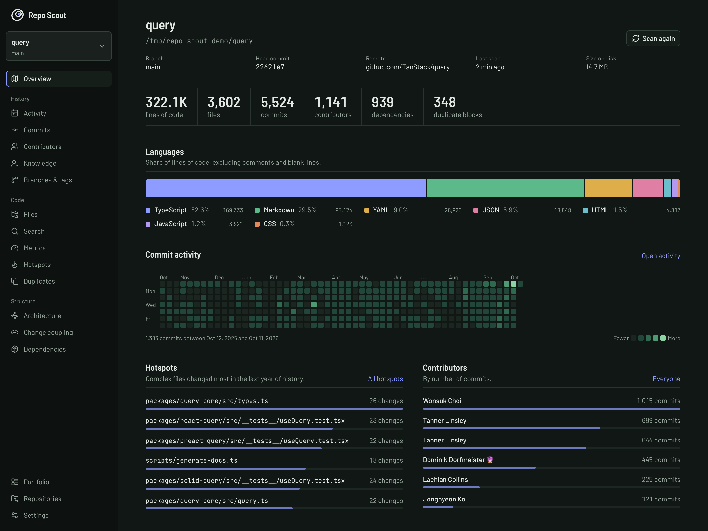
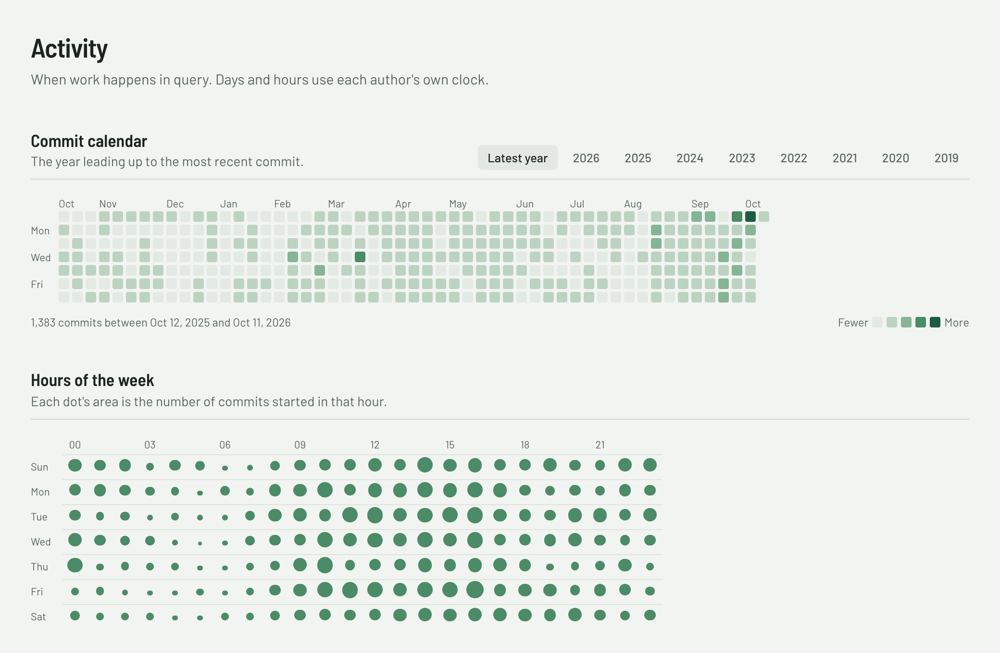
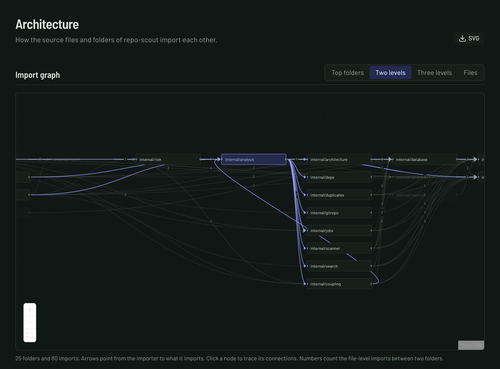
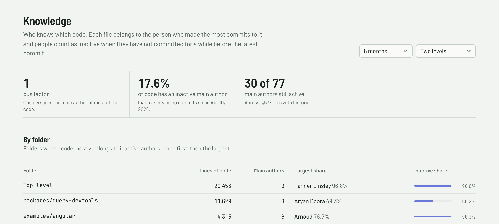
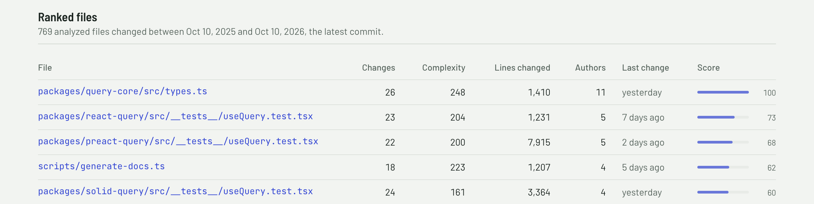
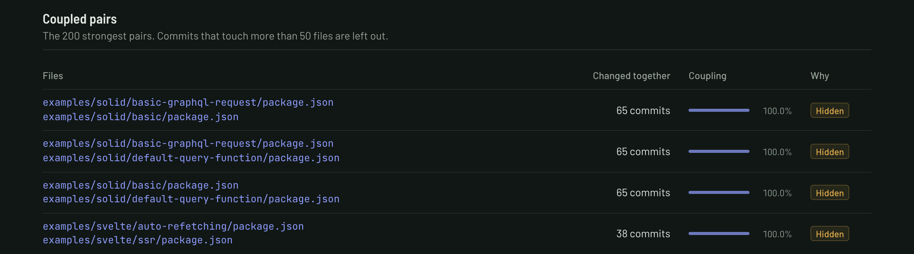

Your codebase,
charted.
Explore the history, code and structure of any Git repository. All on your machine.
Repository overviewRunning on localhost

Explore the history, code and structure of any Git repository. All on your machine.

From a year of commits to the hours work happens, follow the patterns in real Git history.

Turn imports into a map you can explore. Follow connections from folders down to files.

Connect the people who know the code, the files that keep changing and the dependencies history reveals.

See ownership by folder, the bus factor and code whose main author has become inactive.

Find complex files that keep changing. Compare churn, authors and scores across the repository.

Follow files that change together and uncover dependencies the import graph cannot explain.